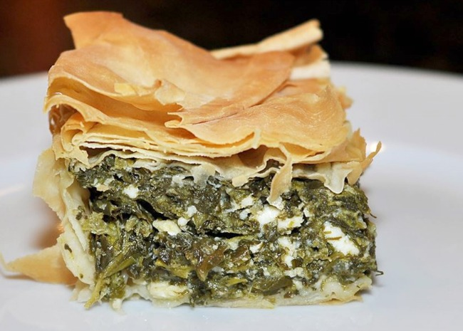

Spanakopita

Description
This is a recipe for spanakopita - feta and spinach pie - that comes from this website.
Ingredients
- 3 tablespoons olive oil
- 1 large onion, chopped
- 1 bunch spring onions, chopped
- 2 cloves garlic, minced
- 1kg spinach, rinsed and chopped
- 200g crumbled feta cheese
- 125g ricotta cheese
- 2 large eggs, lightly beaten
- 8 sheets filo pastry
- 50ml olive oil, or as needed
Method
- Preheat the oven to 175 degrees C. Lightly oil a 20cm square baking pan.
- Heat 3 tablespoons olive oil in a large skillet over medium heat. Saute chopped onion, spring onions, and garlic in the hot oil until soft and lightly browned, about 5 minutes. Stir in spinach, and continue to saute until spinach is wilted, about 2 minutes. Remove from the heat and set aside to cool.
- Mix feta cheese, ricotta cheese, and eggs in a medium bowl until well combined. Stir in spinach mixture.
- Lay one sheet of filo pastry in the prepared baking pan, and brush lightly with olive oil. Lay another sheet of filo pastry on top and brush with olive oil. Repeat the process with two more sheets of filo; the sheets will overlap the pan.
- Spread spinach and cheese mixture into the pan. Fold any overhanging dough over the filling. Brush with oil.
- Layer the remaining 4 sheets of filo, brushing each with oil. Tuck overhanging sheets into the pan to seal the filling.
- Bake in the preheated oven until golden brown, 30 to 40 minutes.
- Cut into squares and serve while hot.